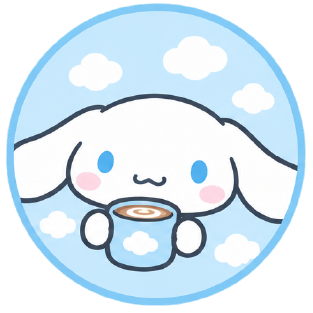
Cinnamoroll ☁️
Dulce, tranquilo y amante de un buen café cremoso.
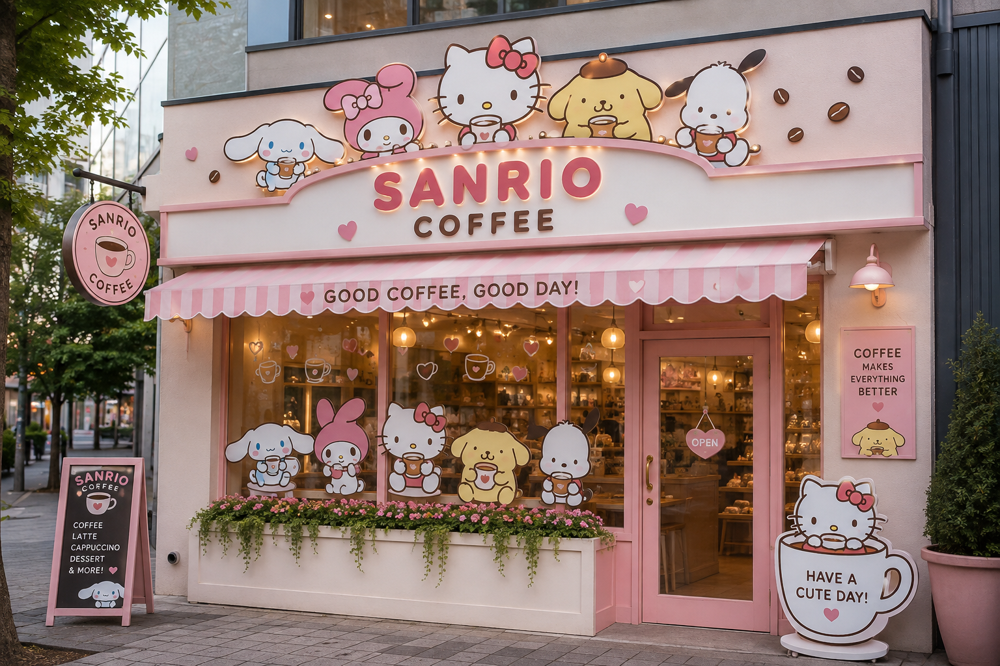
Kitty Coffee es una cafetería temática inspirada en el adorable y colorido universo de Sanrio. El local está diseñado para transmitir una sensación de alegría, tranquilidad y ternura desde el momento en que los clientes se acercan a la entrada. Nuestra cafetería combina tonos rosados y pasteles, decoraciones de corazones, detalles relacionados con el café y la presencia de personajes como Hello Kitty, My Melody, Cinnamoroll, Pochacco y Pompompurin. El propósito de KittyCofee es ofrecer mucho más que una simple taza de café: queremos crear un pequeño momento especial para cada persona que nos visita.
🎀 “Un buen café, un momento especial y un poquito de ternura.”☕
Cada bebida está inspirada en uno de nuestros adorables personajes.

Dulce, tranquilo y amante de un buen café cremoso.
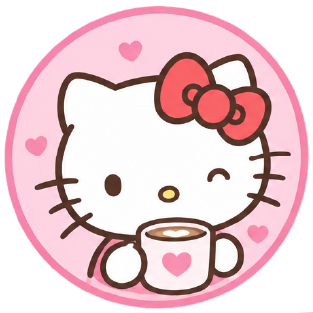
Nuestra anfitriona y fanática del clásico café con leche.
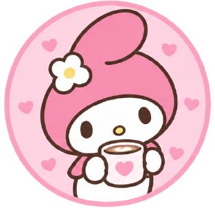
Especialista en bebidas dulces y llenas de ternura.
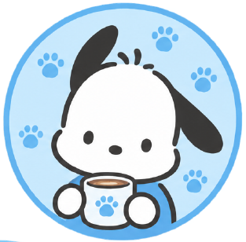
Energía, diversión y un delicioso café frío.
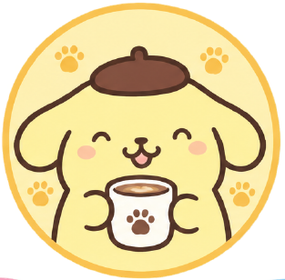
Suave, dulce y perfecto para acompañar un café con espuma.
Descubre nuestras bebidas inspiradas en los personajes favoritos de Sanrio.
El Cappuccino de Cinnamoroll comienza con una extracción de espresso de tueste medio, procurando obtener una crema consistente y aromas de chocolate y frutos secos. A continuación, se vaporiza leche fresca hasta alcanzar aproximadamente 60–65 °C, incorporando aire de manera controlada para conseguir una microespuma densa y cremosa. El espresso se combina con la leche caliente manteniendo una proporción equilibrada entre café, leche y espuma. Para finalizar, se agrega una ligera espolvoreada de canela y un pequeño detalle de espuma inspirado en las características orejas de Cinnamoroll. Perfil: equilibrado, especiado, cremoso y aromático.
$10.000ARS
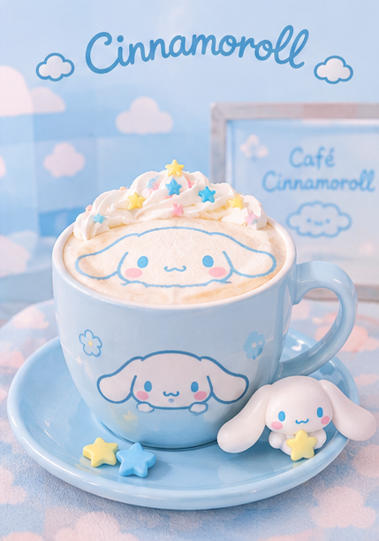
Para preparar el Latte de Vainilla de Hello Kitty, se comienza con una extracción de espresso utilizando café de tueste medio, buscando obtener un sabor equilibrado y ligeramente dulce, incorporando una pequeña cantidad de jarabe de vainilla para aportar suavidad y aroma. La leche se texturiza cuidadosamente hasta conseguir una microespuma fina y sedosa. Luego se vierte sobre el espresso, creando una textura cremosa y uniforme. Finalmente, se completa con una delicada decoración de espuma inspirada en Hello Kitty y un pequeño toque de vainilla. Perfil: suave, cremoso, aromático y ligeramente dulce.
$15.000ARS
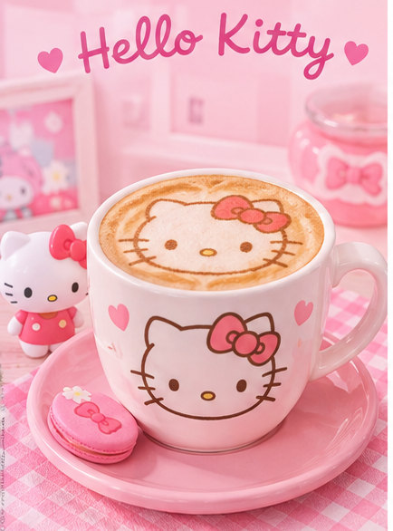
El Strawberry Latte de My Melody comienza con una base de puré de frutillas frescas, preparado cuidadosamente para conservar su aroma y acidez natural. Se incorpora una pequeña cantidad de almíbar de frutilla para equilibrar el sabor y se coloca la mezcla en el fondo del vaso. A continuación, se añade leche fría o ligeramente vaporizada, dependiendo de la versión elegida, creando un contraste visual entre las capas rosadas y blancas. Para finalizar, se incorpora una suave espuma de leche y una decoración de frutilla o pequeños detalles de azúcar inspirados en My Melody. Perfil: frutal, suave, dulce y refrescante.
$10.000ARS
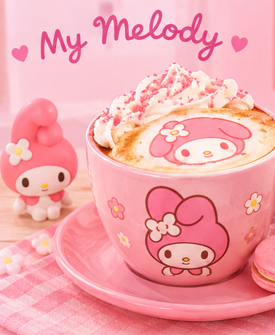
El Mocha de Chocolate de Pochacco comienza con una extracción de espresso de sabor intenso. Se prepara una base de chocolate utilizando chocolate de buena calidad, que se mezcla cuidadosamente con el espresso hasta obtener una crema homogénea y brillante. Posteriormente se incorpora leche vaporizada, manteniendo la temperatura entre 60 y 65 °C para preservar su dulzor natural. La bebida se termina con una fina capa de microespuma y una decoración de cacao en polvo o chocolate rallado, creando una presentación sencilla pero atractiva. Perfil: intenso, chocolatoso, cremoso y ligeramente dulce.
$10.000ARS
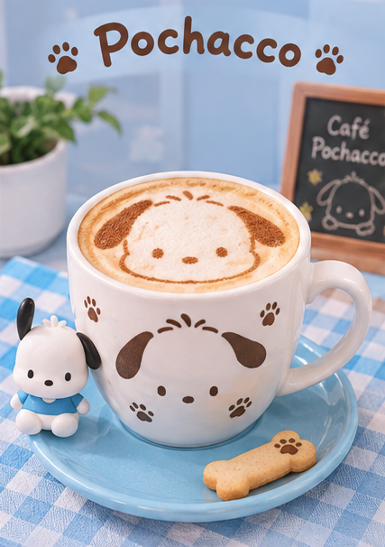
Para el Caramel Macchiato de Pompompurin se prepara primero un espresso intenso. En la base de la taza se incorpora una pequeña cantidad de salsa de caramelo, seguida de leche vaporizada hasta obtener una textura suave y aterciopelada. El espresso se vierte lentamente sobre la leche para conservar las diferentes capas de la bebida. Finalmente, se añade una fina capa de espuma de leche y se decora con hilos de caramelo. Perfil: dulce, intenso, cremoso y con notas profundas de caramelo.
$12.000ARS
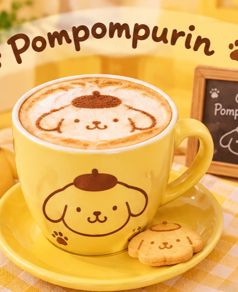
Tu carrito está vacío. 💗
Productos: 0
Total: $0
Reserva tu café antes de visitarnos y asegúrate de tener tu bebida favorita lista.
Tazas disponibles hoy: 50